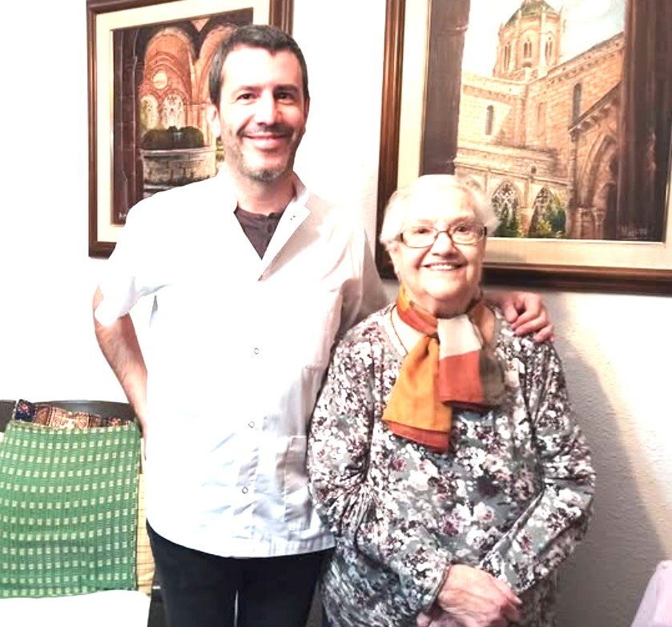
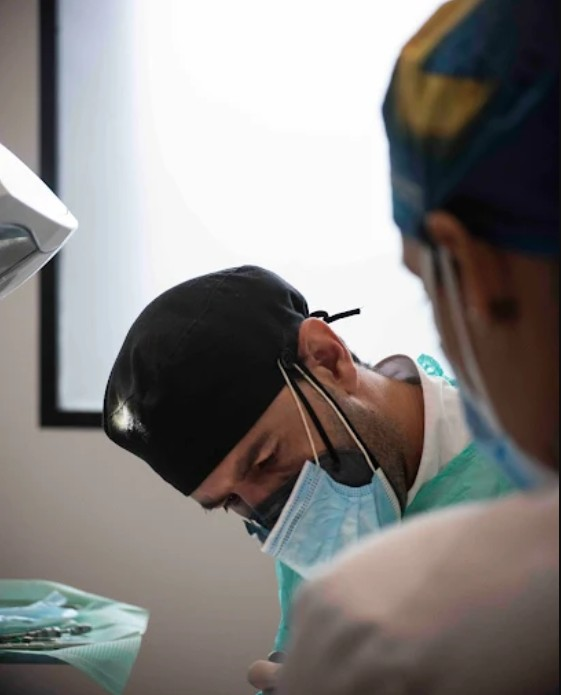

Hola, soy Sergi
Odontólogo en Tarragona con más de 20 años de experiencia. Me importa explicar bien, resolver todas las dudas y que cada persona salga con todo claro.
Para personas mayores o con movilidad reducida. Llevo el equipo portátil a tu casa y realizo revisiones, limpiezas y cuidado de prótesis con plenas garantías de seguridad e higiene.
Ver el servicio a domicilioNoticias en las que salgo
"Dentista a domicilio para mayores en Tarragona"
Reportaje sobre la iniciativa de atender en casa a personas con movilidad reducida.
Leer la noticia
Lo que dicen de mí

★★★★★
"Sergi vino a casa de mi madre y fue atentísimo; casi no le dolió y lo explicó todo con mucha claridad."
— Josefina L.

★★★★★
"Gran profesional y muy humano. El seguimiento de Sergi marca la diferencia."
— Ismael S.
★★★★★
"El mejor dentista que he tenido. Servicio excelente, 100% recomendable."
— Daniela T.
★★★★★
"Nos atendió en una urgencia en domingo. Profesional, cercano y sin hacernos esperar."
— Cristina